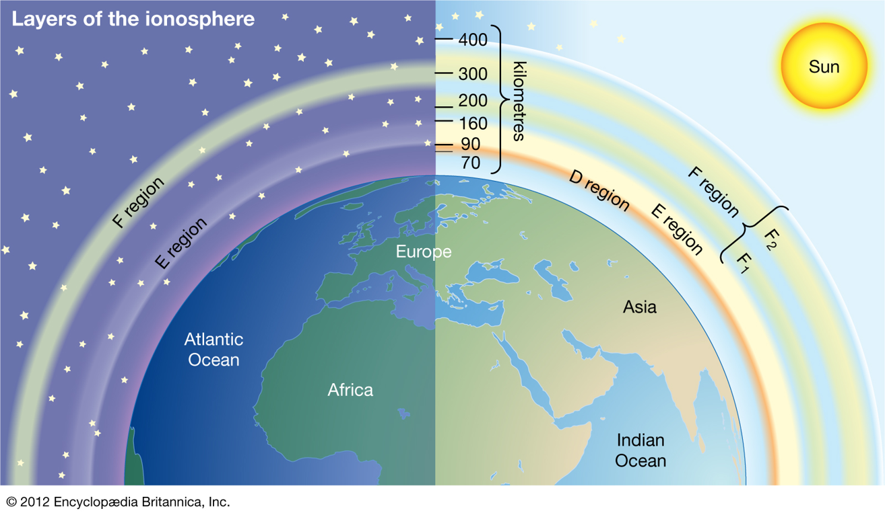
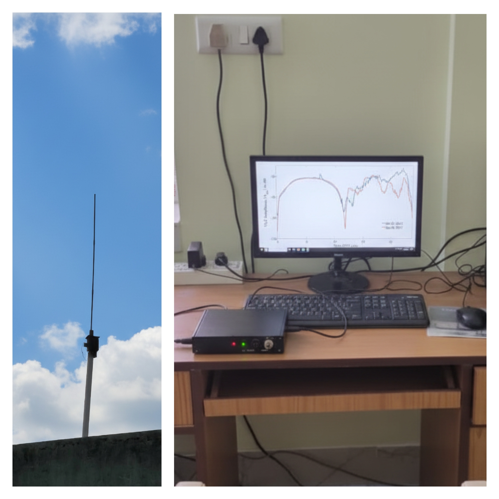
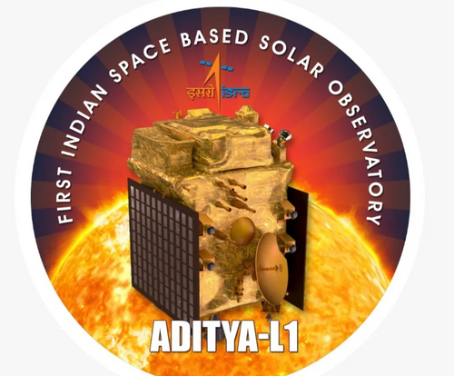

About Me
I am a Senior Project Associate (Postdoctoral Fellow) with the Aditya-L1 Support Cell (a joint initiative of ISRO and ARIES) at the Aryabhatta Research Institute of Observational Sciences (ARIES), Nainital, India.
I have carried out my doctoral research as an INSPIRE-Fellow (DST, Govt. of India) at the Indian Centre for Space Physics (ICSP), Kolkata, India. I completed my Ph.D. in Theoretical Physics from the University of Calcutta.
My doctoral research focused on the response of the lower ionosphere to solar ionization through electron-continuity-based modelling and Very Low Frequency (VLF) signal propagation analysis.
My broader research interests encompass ionospheric physics, solar–terrestrial interactions, space weather, and the use of observational data and theoretical modelling to investigate the coupling between solar activity and Earth's near-space environment.
Research Interests
D-region Ionosphere
Numerical modelling and investigation of the lower ionospheric D-region and its response to solar radiation.
Explore research →VLF Remote Sensing
Study of sub-ionospheric Very Low Frequency radio signal propagation as a remote sensing technique.
Explore research →Solar Flares
Investigation of ionospheric electron density variations and response times associated with solar flares.
Explore research →Solar–Terrestrial Physics
Exploring the coupling between solar activity and Earth's ionosphere using observations and modelling.
Explore research →Visual Glimpses



